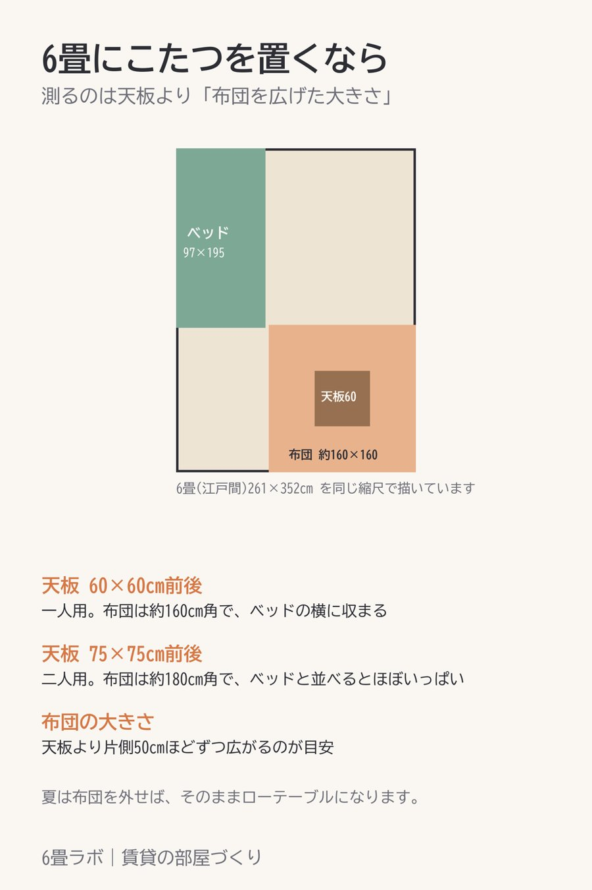

6畳にこたつを置くなら、布団を広げた大きさで測る
この記事には楽天アフィリエイトのリンクが含まれています。

こたつは天板の大きさで選びがちですが、場所をとるのは布団のほうなんです。
こたつ布団は、天板より片側50cmほどずつ広がるのが目安です。天板60×60cmの一人用なら、布団は160cm角くらい。75×75cmなら180cm角くらいになります。
6畳(江戸間で261×352cmくらい)にシングルベッドを置いている部屋だと、一人用ならベッドの横に収まります。75×75cmになると、ベッドと並べたときに床がほとんど残りません。
なので、測るときは天板ではなく、布団を広げた大きさで床を測っておくのがおすすめです。夏は布団を外せば、そのままローテーブルとして使えます。
紹介した商品
- 【PR】天板60×60cmの一人用こたつと布団のセット(楽天市場)